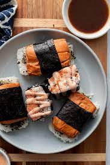

Salmon Musubi

Description
Traditional Hawaiian musubi is made with Spam. But you can also make it with other items such as salmon or chicken.
Musubi is a tasty snack, popular in Hawaii. It is made with sticky rice, choice of protein (spam is classic), or you can even use tofu, wrapped in nori. Nori is the kind of seaweed used for sushi
Ingredients
- 1 1/2 lb wild sockeye or copper river salmon
- 1 cup passion fruit Ponzu shoyo sauce
- Seaweed sheets cut into 2 inch wide strips
- 2-3 cups cooked sticky rice
- Furikale
Steps
- Cut salmon into 3 inch by inch and half pieces. Marinade skin side up in a glass dish with half a cup or so of the passion fruit ponzu for 30 min
- Make rice while salmon is marinating
- Line a baking sheet with foul and lightly spray with oil, heat oven to 425 Deg F. Place salmon skin down on foil and bake for 5 min
- place the musubi maker over the middle or lower third of the strip of seaweed and spoon in about 1/3 cup of rice. Press down with the musubi maker top then remove the mold
- Sprinkle a little furikale over the rice, then a picee of salmon and wrap up the seaweed, using a little water if necessary to seal